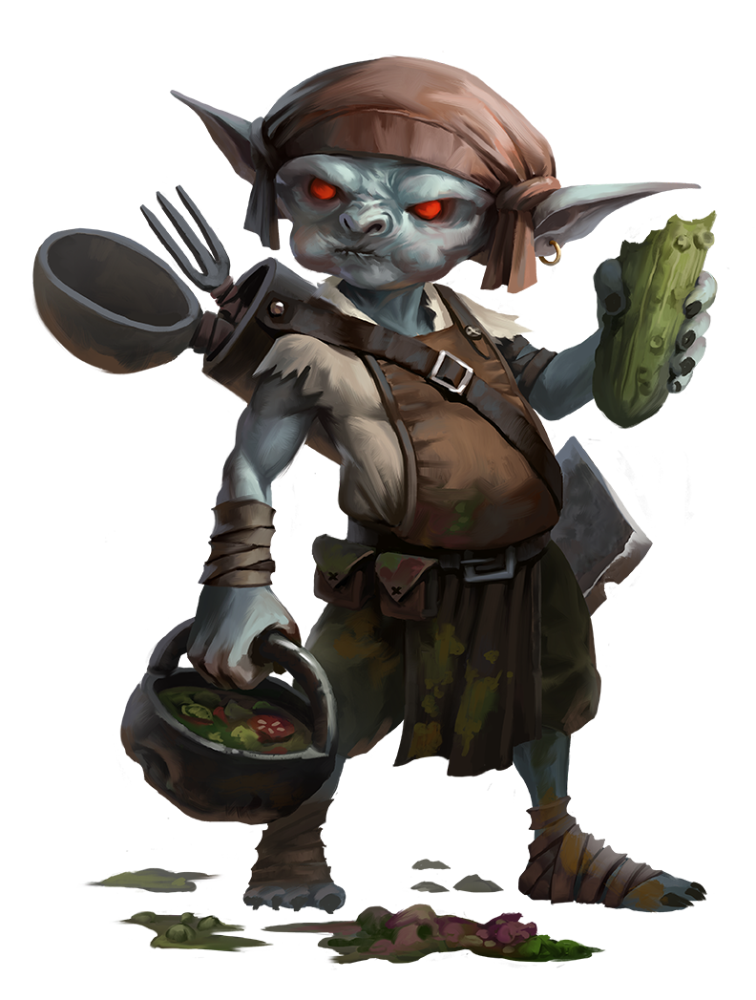

Elfe |
Les elfes sont grands et minces, issus d’un peuple doté d’une longue espérance de vie et d’une importante tradition artistique et magique. | Elfe |
Gnome |
Les gnomes sont petits et robustes, animés d’une insatiable curiosité et d’habitudes excentriques. |  Gnome |
|  Gobelin |
Les gobelins sont petits, énergiques et brouillons, redoutés et dénigrés depuis des millénaires. | Gobelin |
Nain |
Les nains sont petits et trapus, souvent entêtés, féroces et dévoués. | Naine |
Halfelin |
Les halfelins sont des gens de petite taille qui s’adaptent facilement et montrent une curiosité et un humour remarquables. | Halfelin |
Humain |
Imprévisibles et disparates, les humains font preuve d'une volonté exceptionnelle qui les pousse à s'étendre. Cette civilisation constitue aujourd'hui la majorité de la population du pourtour de la mer Intérieure. | Humaine |